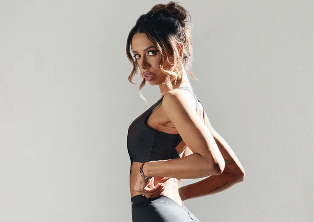
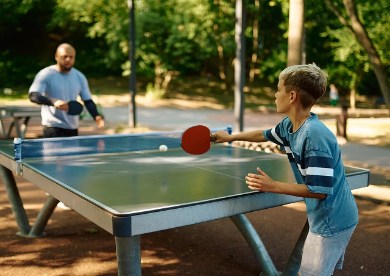
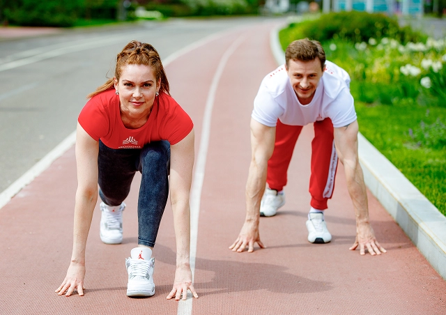
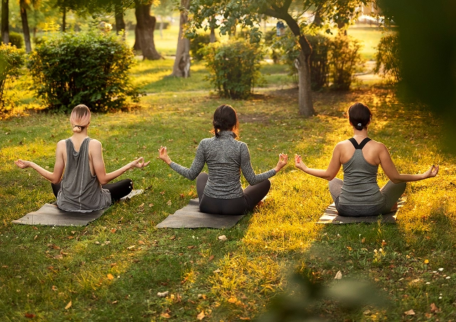

Спецпроекты на стадионах
Одних выходных для спорта маловато? Мы тоже так подумали.
Поэтому в летние выходные вас ждет серия спецпроектов на главных стадионах Москвы. Шесть уникальных событий с топовыми тренерами, авторскими программами и разными форматами — от барре и функционального тренинга до йоги и бодикомбата.
Календарь спецпроектов

7 июня
ЦСКА Арена
Статус: Регистрация
Мероприятие в разработке. Скоро открытие регистрации

8 июня
ОК Лужники (БСА)
Статус: Регистрация
Мероприятие в разработке. Скоро открытие регистрации

15 июня
Лукойл Арена
Статус: Регистрация
Мероприятие в разработке. Скоро открытие регистрации

19 июля
РЖД Арена
Статус: Регистрация
Мероприятие в разработке. Скоро открытие регистрации
(в проработке)
ВТБ Арена
Статус: Регистрация
Мероприятие в разработке. Скоро открытие регистрации